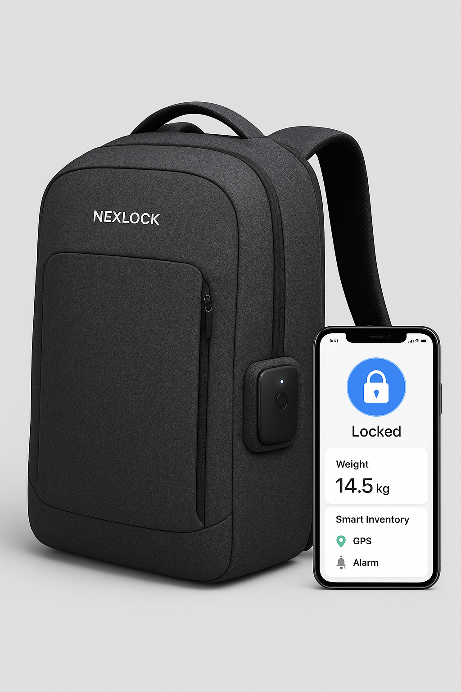

Nexlock
Mochilas inteligentes con seguridad y tecnología real
Diseñamos mochilas que calculan el peso, permiten bloqueo y desbloqueo desde tu teléfono, son impermeables, llevan un inventario inteligente de lo que cargas, y cuentan con GPS y alarma. Perfectas para la universidad, la oficina y viajes.
Funciones clave
- Bloqueo/Desbloqueo por app (Bluetooth/NFC) y candado integrado.
- Cálculo de peso y alerta por sobrecarga.
- Inventario inteligente: recuerda qué llevas (llaves, laptop, billetera).
- GPS + alarma sonora contra robo o pérdida.
- Resistencia al agua con materiales premium.
Ver la tienda